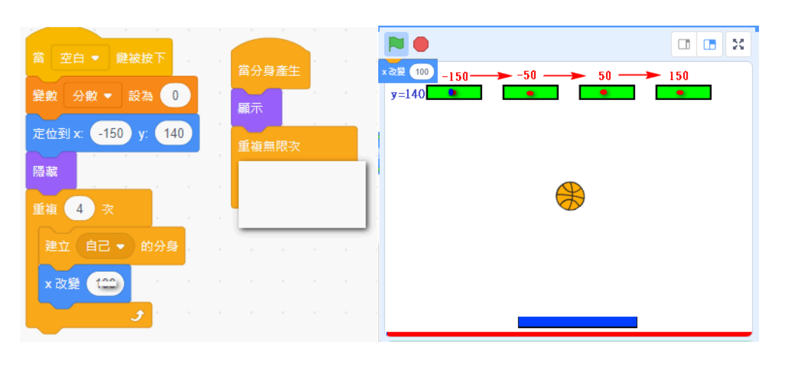
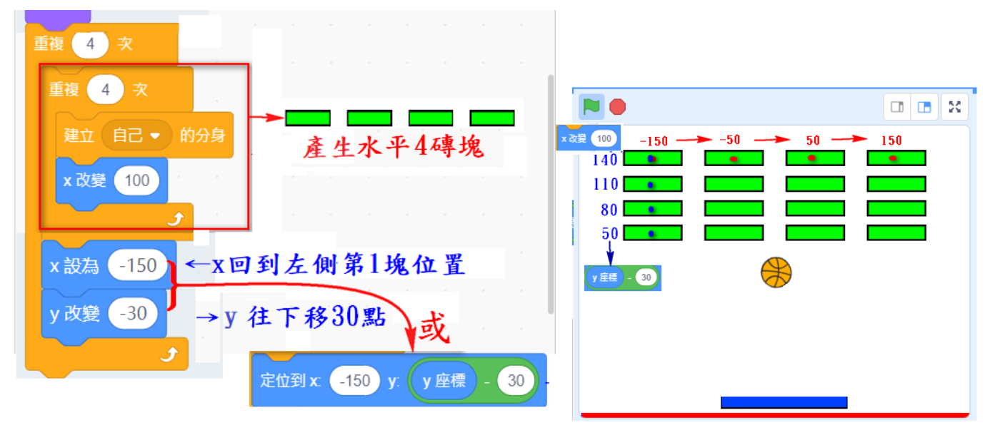

📚 第一章：課程介紹與遊戲概念
🎯 什麼是打磚塊遊戲？
打磚塊（Breakout）是一個經典的街機遊戲，最早由 Atari 公司在 1976 年推出。遊戲玩法簡單但富有挑戰性：
- 玩家控制底部的擋板（球拍）
- 讓球彈跳來擊破上方的磚塊
- 不能讓球掉落到底線
- 擊破所有磚塊即可過關

完整的打磚塊遊戲畫面示意圖
💡 學習重點
在這個專案中，你將學習到：
- 分身（Clone）系統：如何用一個角色產生多個分身
- 變數應用：使用變數記錄分數和遊戲狀態
- 碰撞偵測：判斷球與磚塊、球拍的碰撞
- 座標計算：使用數學公式計算磚塊排列位置
- 遊戲流程控制：遊戲開始、進行、結束的流程設計
📋 第二章：作業要求
✅ 必須完成的功能
- 按綠旗顯示遊戲說明：顯示文字背景 1，其他角色隱藏
- 按空白鍵進入遊戲：切換到背景 2（遊戲畫面）
- 以分身建立 16 個磚塊：使用 4×4 排列
- 球拍隨滑鼠移動：可以左右移動
- 球的物理運動：開始往下掉，碰到球拍會反彈
- 遊戲結束條件：遇到紅線發出聲音並停止全部程式
- 計分系統：每打到一個磚塊獲得 1 分，該磚塊消失
- 過關條件：如果分數到達 16 分，顯示恭喜過關訊息
⚠️ 注意事項
- 檔名格式：
學號-5.sb3（例如：81234-5.sb3） - 錯誤檔名如
81234-5(1).sb3可能會被扣分 - 必須在背景 1 加入班級、座號、姓名資訊
- 確保所有角色的中心點設定正確
📚 第三章：教學資源與參考資料
💡 學習建議：
- 先完整閱讀變數教學連結，確保理解變數的概念
- 下載教學檔案作為參考範例
- 查看遊戲示意圖了解最終成果
- 建議先在紙上規劃遊戲流程再開始編程
🛠️ 第四章：準備工作
步驟 1：登入 Scratch 網站
- 前往 https://scratch.mit.edu
- 使用你的帳號密碼登入
- 確認已成功登入（右上角會顯示你的使用者名稱）
步驟 2：匯入基本檔案
- 下載老師提供的基本檔案（例如：
801吳XX-5.sb3） - 在 Scratch 中點選「檔案」→「從你的電腦上傳」
- 選擇下載的 .sb3 檔案
- 等待檔案載入完成
步驟 3：更改檔名並儲存
- 點選專案名稱（畫面上方）
- 將檔名改為：
你的學號-5 - 例如：
81234-5 - 立即按下「儲存」確保檔名正確
✅ 準備完成！現在可以開始進行程式編輯了。
📊 第五章：建立分數變數
🎯 為什麼需要變數？
變數就像一個有名字的盒子，可以用來儲存遊戲中的資料。在打磚塊遊戲中，我們需要變數來記錄：
- 分數：玩家目前打到幾個磚塊
建立全域變數
操作步驟
- 點選左側的「變數」分類（橘色）
- 點選「建立變數」按鈕
- 輸入變數名稱：
分數 - 選擇「適用於所有角色」（全域變數）
- 點選「確定」
建立變數 分數（所有角色）
💡 提示：
- 全域變數（所有角色）：所有角色都能讀取和修改，適合用於「分數」
- 區域變數（僅此角色）：只有該角色能使用，適合用於速度
- 變數名稱要有意義，方便理解程式
🎬 第六章：舞台與流程控制
舞台角色程式
程式 1：按綠旗顯示遊戲說明
當 綠旗 被點擊
切換背景到 背景1（說明）
說明：點擊綠旗後，顯示遊戲說明背景，分數歸零，並通知所有角色進行初始化。
程式 2：按空白鍵開始遊戲
當 空白鍵 被按下
切換背景到 背景2（遊戲）
說明：按下空白鍵後，切換到遊戲背景，並廣播 start 訊息開始遊戲。
加入遊戲說明文字圖
在背景 1 加入說明文字
- 在背景 1（遊戲說明）中加入一個文字角色或直接在背景上繪製文字
- 說明內容應包含：
- 班級、座號、姓名
- 遊戲玩法說明（例如：按空白鍵開始遊戲）
- 遊戲規則（例如：打破所有磚塊即可過關）
- 確保文字清晰易讀，顏色與背景有足夠對比

遊戲說明畫面範例
💡 提示：
- 背景 1 是玩家第一眼看到的畫面，要有吸引力
- 班級、座號、姓名是必填資訊，不要遺漏
- 可以加入裝飾圖案讓畫面更豐富
🧱 第七章：磚塊分身系統
🎯 什麼是分身？
分身（Clone）是 Scratch 中非常強大的功能：
- 本尊：原始的角色，通常會隱藏起來
- 分身：複製出來的角色，可以有獨立的行為
- 優點：不用手動建立 16 個磚塊角色，用程式自動產生

4×4 磚塊排列示意圖
磚塊程式 2：產生第 1 列磚塊（4 個）
步驟說明
- 先隱藏本尊：若本尊顯示，被球打到不會隱藏！必須先隱藏
- 建立分身：使用「重複 4 次」建立 4 個分身
- X 座標右移：每次建立分身後，須將 X 座標往右移動 100 點，以便產生分開的 4 個磚塊
- 顯示分身：當分身產生時需下「顯示」命令，才看得到分身

第 1 列磚塊生成流程圖
⚠️ 重要提醒：
- 一定要先隱藏本尊，否則本尊被球打到會出問題
- X 座標每次 +100，所以磚塊會排列在：-150, -50, 50, 150
- 分身產生時必須加「顯示」指令，才會看到磚塊
磚塊程式 3：產生 4 列磚塊（共 16 個）
步驟說明
- 重複 4 次：重複執行「產生第 1 列磚塊」的程式 4 次
- X 座標歸位：每建立好一列，讓 X 回到 -150 處（起始位置）
- Y 座標下移：Y 軸往下移動 30 點（-30），準備產生下一列

完整 4×4 磚塊生成流程圖
📐 磚塊位置計算說明
第 1 列（Y = 120）：X 座標為 -150, -50, 50, 150
第 2 列（Y = 90）：X 座標為 -150, -50, 50, 150
第 3 列（Y = 60）：X 座標為 -150, -50, 50, 150
第 4 列（Y = 30）：X 座標為 -150, -50, 50, 150
總共建立：4 列 × 4 個 = 16 個分身
磚塊程式 4：判斷偵測是否得分、並刪除分身
分身的碰撞偵測
當 分身產生
顯示
重複無限次
如果 碰到 球？ 那麼
將 分數 改變 1
刪除此分身
說明：當分身產生時，先顯示分身，然後一直偵測，如果磚塊碰到球，分數加 1 分而且要刪除分身。
💡 重點提示：
- 分身產生時一定要加「顯示」指令
- 使用「重複無限次」持續偵測是否碰到球
- 每打到一個磚塊就加 1 分，並刪除該分身
- 刪除分身後，該磚塊就會消失
🏒 第八章：球拍控制
球拍程式 1：初始化
收到 init 訊息時
當收到 init
隱藏
說明：遊戲說明階段隱藏球拍。
球拍程式 2：跟隨滑鼠移動
收到 start 訊息後開始跟隨滑鼠
當收到 start
顯示
重複無限次
將 x 設為 滑鼠的 x 座標
將 y 設為 -150
說明：球拍會一直跟隨滑鼠的 X 座標（左右移動），Y 座標固定在 -150（底部）。
💡 提示：
- 球拍只需要左右移動，不需要上下移動
- Y 座標固定在 -150，可以根據舞台調整
- 確保球拍的中心點設定在正中央
⚽ 第九章：球的運動與碰撞
球程式 1：初始化
收到 init 訊息時
當收到 init
隱藏
球程式 2：開始運動
收到 start 訊息後開始運動
當收到 start
顯示
定位到 x:0 y:0
面向 向下（180度）
重複無限次
移動 5 點
如果 碰到 球拍？ 那麼
面向 向上（0度）
如果 碰到邊緣？ 那麼
碰到邊緣就反彈
球程式 3：遊戲結束判定
碰到紅線則遊戲結束
當收到 start
重複無限次
如果 碰到顏色 紅色？ 那麼
播放音效 Lose
停止 全部程式
說明：在舞台底部畫一條紅線，球碰到紅線就表示遊戲失敗。
球程式 4：過關判定
分數達到 16 分即過關
當收到 start
重複無限次
如果 分數 = 16 那麼
說出 恭喜過關！ 2 秒
播放音效 Win
停止 全部程式
⚠️ 常見問題
- 球跑太快：減少「移動」積木的點數（例如從 5 改為 3）
- 球沒有反彈：檢查球拍和磚塊的碰撞偵測是否正確
- 球穿過球拍：確保球的速度不要太快，碰撞偵測才來得及判斷
- 紅線沒反應：確認紅線的顏色設定正確（使用滴管工具選取顏色）
⭐ 第十章：加分題挑戰
🏆 加分項目（選做）
完成基本功能後，可以挑戰以下加分項目來提升遊戲品質：
加分題 1：多彩磚塊 🎨
難度：⭐⭐
讓磚塊有不同的顏色，增加視覺豐富度。
當 分身產生
顯示
定位到 x:-150 + (j × 100) y:120 - (i × 30)
將顏色效果改變 i × 50
提示：利用變數 i 來改變顏色效果，每一列會有不同顏色。
加分題 2：生命值系統 ❤️
難度：⭐⭐⭐
增加生命值變數，讓玩家有 3 次機會。
- 建立「生命」變數，初始值設為 3
- 球碰到紅線時，生命減 1
- 如果生命 > 0，重新開始（球回到中央）
- 如果生命 = 0，遊戲結束
加分題 3：球速漸增 🚀
難度：⭐⭐⭐
隨著遊戲進行，球的速度逐漸加快。
- 建立「速度」變數，初始值 3
- 每打到 4 個磚塊（分數 % 4 = 0），速度 +1
- 球的移動使用「速度」變數
- 最高速度限制為 10
加分題 4：音效與特效 🎵
難度：⭐⭐
增加遊戲的聲音和視覺效果。
- 打到磚塊時播放音效
- 球反彈時播放音效
- 磚塊消失時加入特效（縮小、旋轉）
- 過關時加入慶祝動畫
加分題 5：計時系統 ⏱️
難度：⭐⭐⭐⭐
加入計時功能，記錄玩家過關時間。
- 建立「時間」變數
- 遊戲開始時重設計時器
- 顯示經過的秒數
- 過關時顯示「用時 XX 秒過關！」
✨ 創意發揮
除了以上建議，你也可以加入自己的創意：
- 設計特殊磚塊（需要打兩次才會消失）
- 加入道具系統（放大球拍、多球等）
- 製作多個關卡
- 加入排行榜系統
📝 總結與檢查清單
✅ 完成檢查清單
在繳交作業前，請確認以下項目都已完成：
- ☐ 檔名格式正確（學號-5.sb3）
- ☐ 背景 1 有顯示班級、座號、姓名
- ☐ 按綠旗顯示遊戲說明，其他角色隱藏
- ☐ 按空白鍵進入遊戲
- ☐ 成功建立 4×4 共 16 個磚塊分身
- ☐ 球拍能跟隨滑鼠左右移動
- ☐ 球會往下掉並碰到球拍反彈
- ☐ 球碰到邊緣會反彈
- ☐ 球碰到紅線會結束遊戲
- ☐ 打到磚塊會加分且磚塊消失
- ☐ 分數到達 16 分顯示過關訊息
- ☐ 所有角色的中心點設定正確
🎯 學習心得
完成這個專案後，你應該已經學會：
- 分身系統：如何用程式建立和管理多個相同角色
- 變數應用：使用變數記錄遊戲狀態和分數
- 座標計算：用數學公式計算角色位置
- 碰撞偵測：判斷不同角色之間的接觸
- 流程控制：設計完整的遊戲流程
這些都是程式設計的重要概念，未來可以應用在更複雜的專案中！
🎓 課程結束
祝你製作出有趣的打磚塊遊戲！
© 2024 銘傳資科 - Scratch 程式設計課程